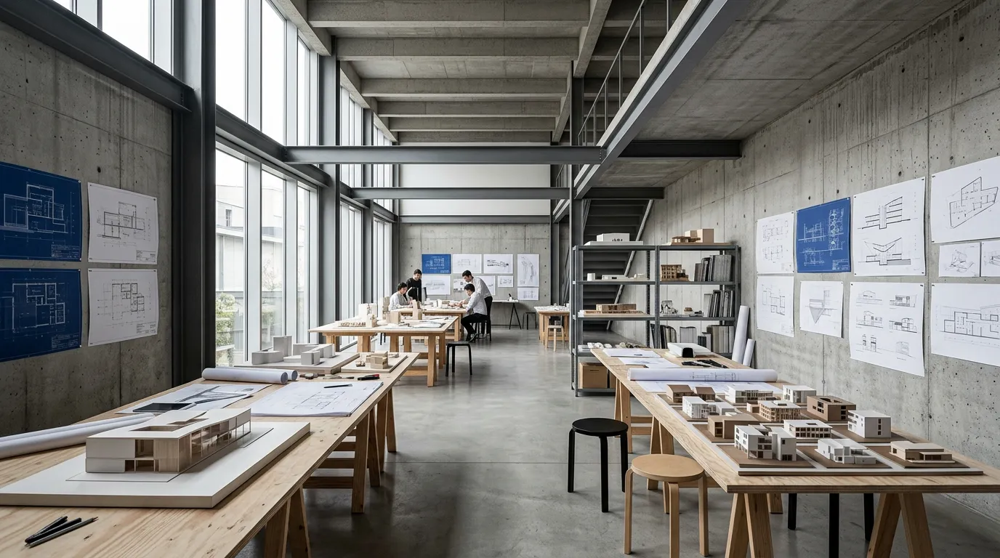
Selected Projects
건축이 말하는
순간들
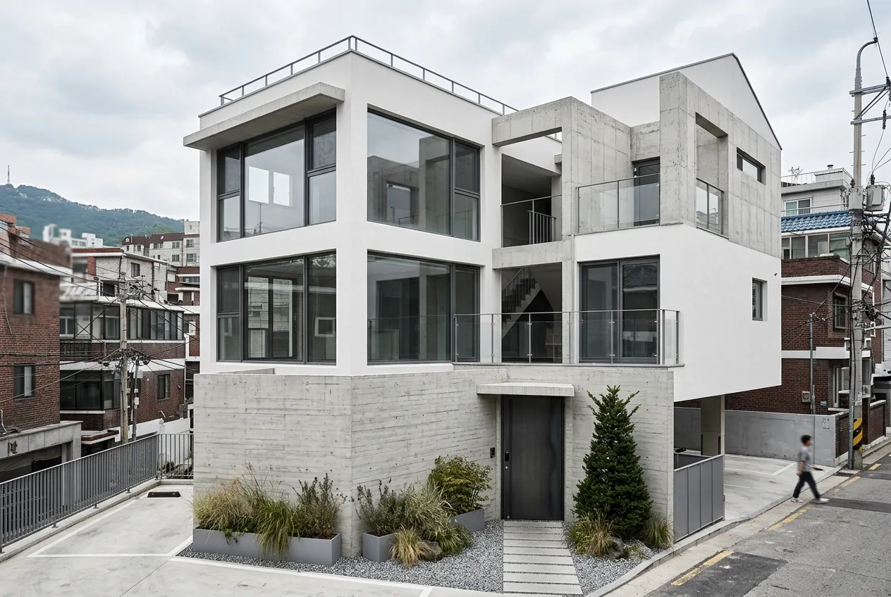
한남동 하우스
한남동 하우스
서울 용산구 · 주거 리노베이션 · 2024
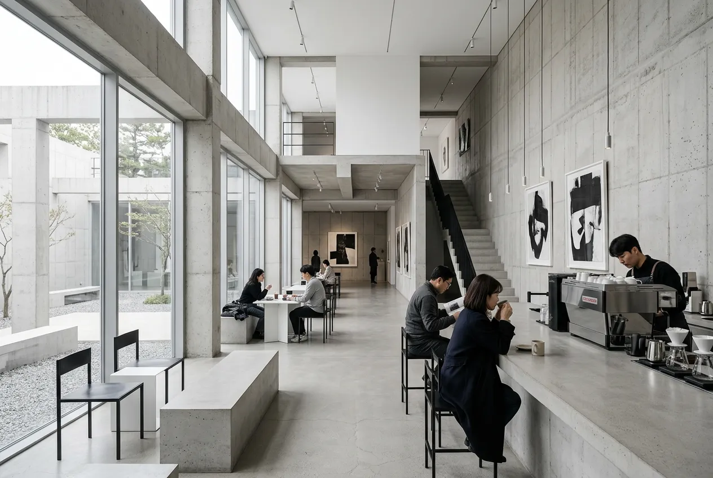
성수 갤러리 카페
서울 성동구 · 상업 · 2024
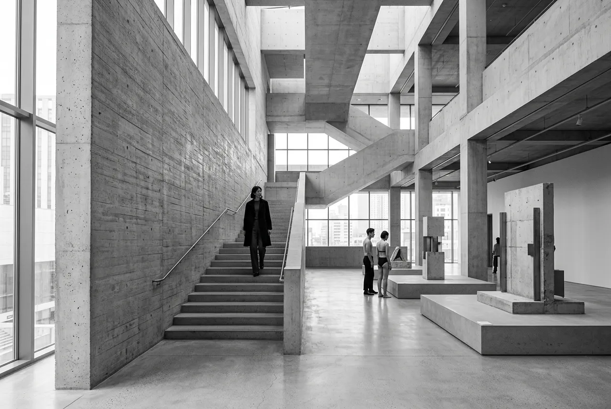
을지 아트센터
서울 중구 · 문화시설 · 2023
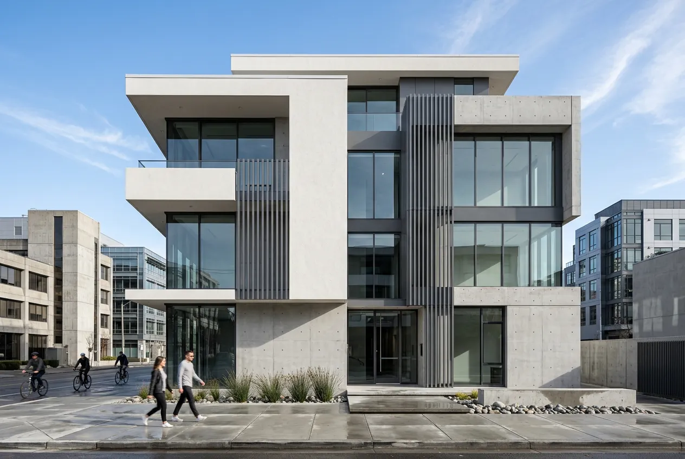
논현 사옥
서울 강남구 · 오피스 · 2023
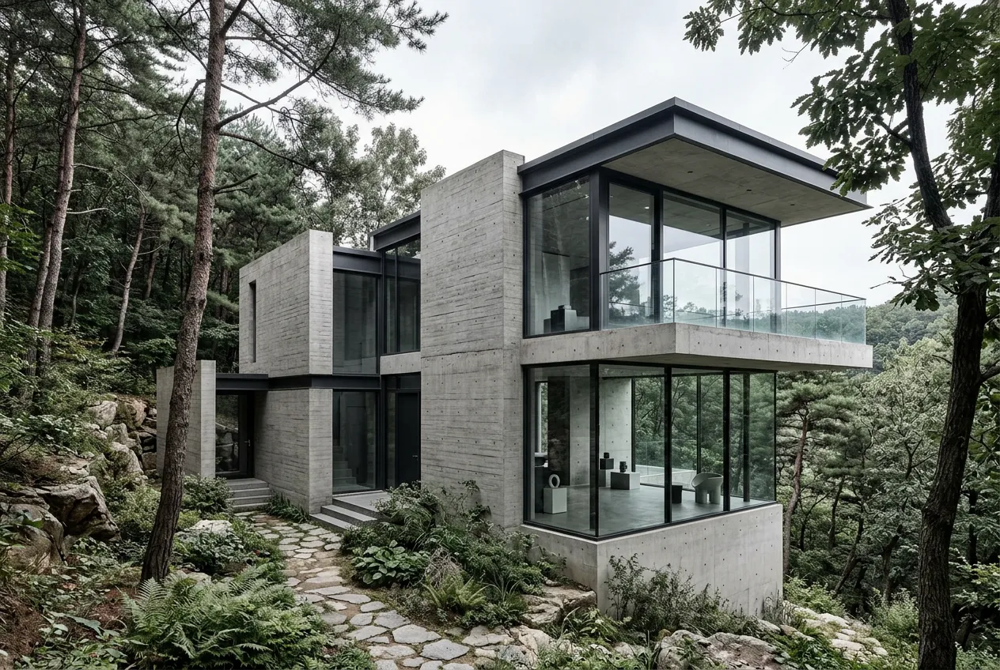
양평 세컨드 하우스
경기 양평군 · 주거 신축 · 2022
Design Philosophy
비움으로
완성하는 건축
좋은 건축은 채우는 것이 아니라 비우는 것에서 시작합니다. 스튜디오 아키브는 공간의 여백이 만들어내는 빛과 그림자, 그 사이에 흐르는 시간의 결을 설계합니다.
우리는 건축주의 삶을 가장 먼저 듣습니다. 매일의 동선, 빛이 드는 시간, 바람이 지나가는 방향. 그 위에 구조를 놓고, 불필요한 것을 덜어냅니다.
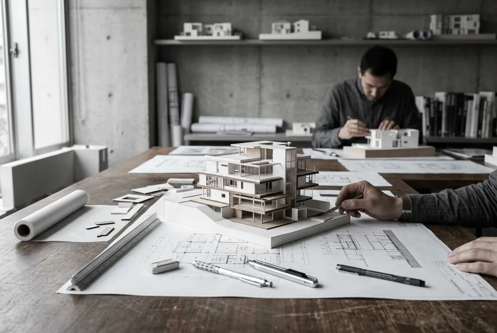
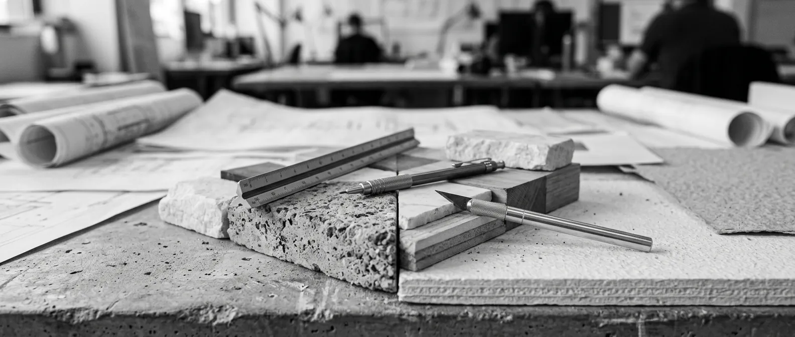
Since 2016
“건축은 얼어붙은 음악이다”
Friedrich von Schelling
People
공간을 만드는 사람들
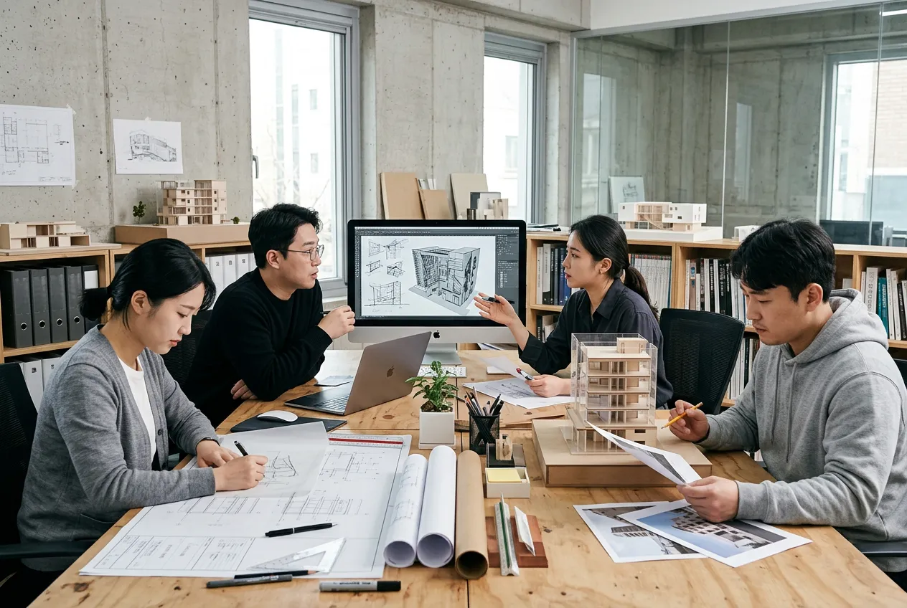
Principal Architect
김도현
서울대학교 건축학과 졸업. 대한건축사협회(KIRA) 등록 건축사. 헤르초그 앤 드 뫼롱(바젤) 근무 후 2016년 스튜디오 아키브 설립. 공간의 본질에 대한 끊임없는 질문을 설계 언어로 풀어냅니다.
Design Director
박서연
KAIST 건축학 석사. AA School(런던) 수학. 공간의 시퀀스와 물성에 대한 섬세한 감각으로 디자인을 리드합니다.
Project Manager
이준혁
연세대학교 건축공학과 졸업. 시공 현장 10년 경력. 설계 의도를 현실로 옮기는 디테일한 프로젝트 관리를 담당합니다.
Project Manager
최민지
고려대학교 건축학과 졸업. 인테리어와 건축의 경계를 넘나드는 통합적 설계로 공간의 완성도를 높입니다.
Recognition
수상 및 매체
대한건축사협회 작품상
한남동 하우스 — 주거부문 우수상
ArchDaily Building of the Year
을지 아트센터 — 문화시설 부문 노미네이트
서울건축문화제 초청
양평 세컨드 하우스 — 전시작 선정
월간 특집 게재
“비움의 건축” — 커버 스토리
김수근건축상 후보
성수 갤러리 카페 — 최종 심사
Dezeen Awards Longlist
논현 사옥 — Small Office 부문
Publications
- ArchDaily
- Dezeen
- 월간 SPACE
- DETAIL Korea
- 건축문화
Affiliations
- 대한건축사협회 (KIRA)
- 한국건축가협회 (KIA)
- 서울건축포럼
Our Process
설계의
여정
하나의 건축이 완성되기까지,
모든 단계에 건축주와 함께합니다.
01
현장 방문
대지의 맥락을 읽습니다. 빛의 방향, 주변 환경, 토지의 조건을 면밀히 분석합니다.
02
컨셉 디자인
건축주의 삶의 방식과 대지의 조건이 만나는 설계 컨셉을 수립합니다.
03
기본 설계
평면, 입면, 단면을 구체화합니다. 공간의 비례와 동선을 조율합니다.
04
실시 설계
시공을 위한 상세 도면을 작성합니다. 소재, 마감, 구조를 확정합니다.
05
감리
설계 의도가 현장에서 정확히 구현되는지 직접 확인합니다. 완공까지 책임집니다.
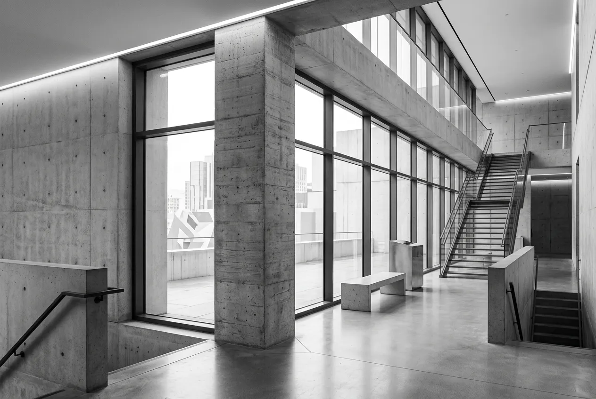
Featured Project
을지 아트센터
서울 중구 · 문화시설 신축 · 520㎡ · 2023
More Work
진행 중인 이야기들
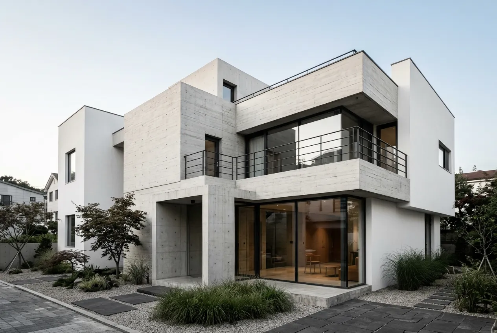
판교 타운하우스
주거 · 진행중
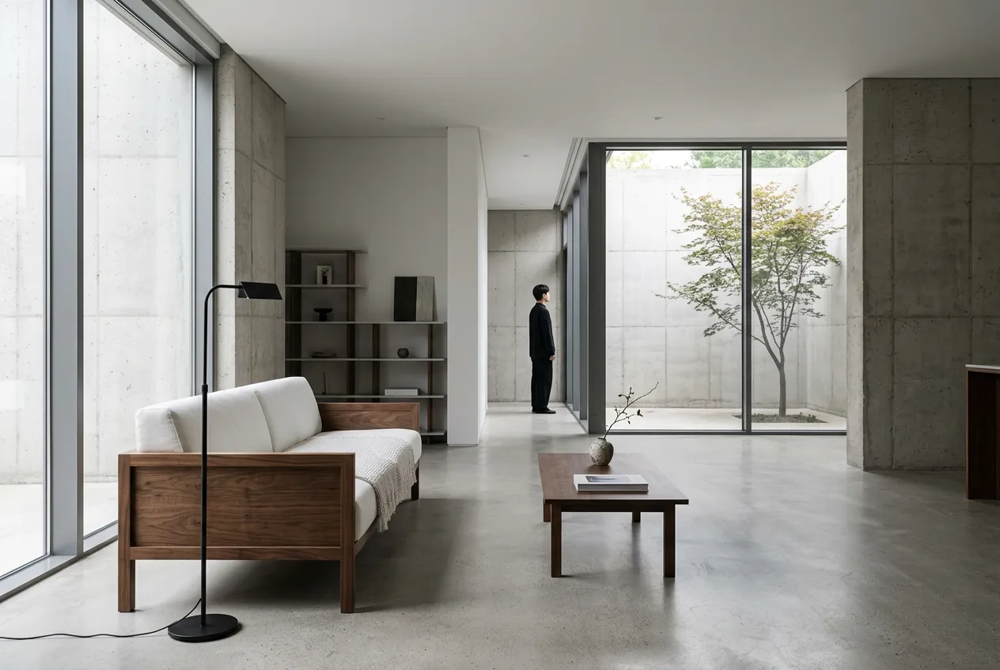
제주 부티크 호텔
숙박 · 설계중
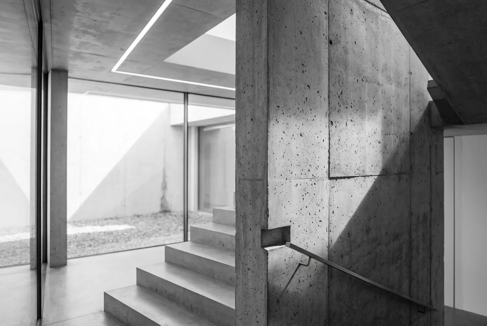
이태원 복합문화공간
문화 · 컨셉설계
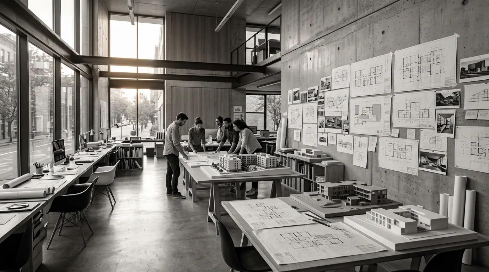
Project Inquiry
당신의 공간을
함께 설계합니다
새로운 프로젝트를 준비하고 계신다면,
가벼운 상담부터 시작하세요.